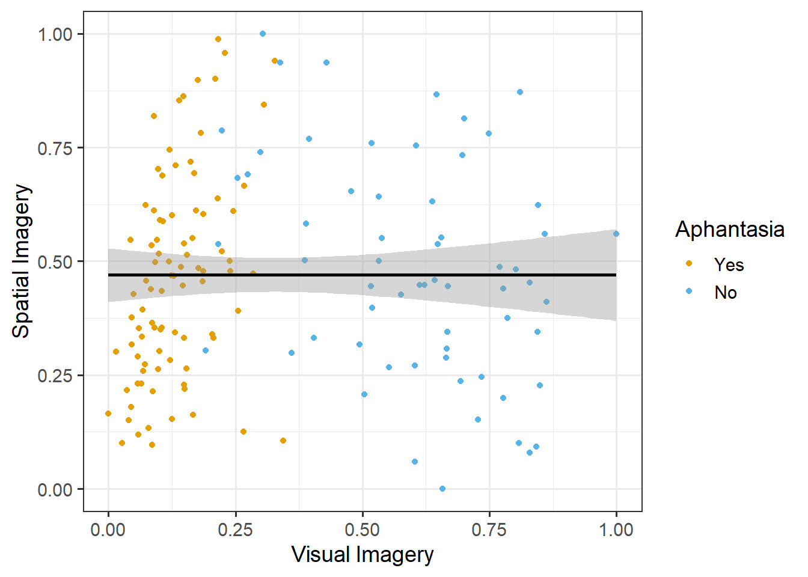
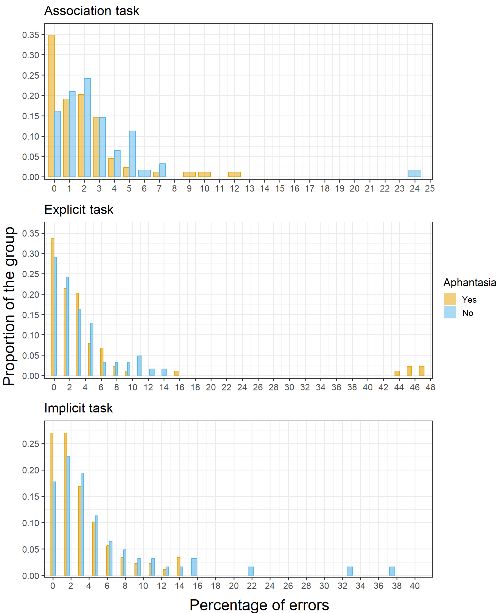
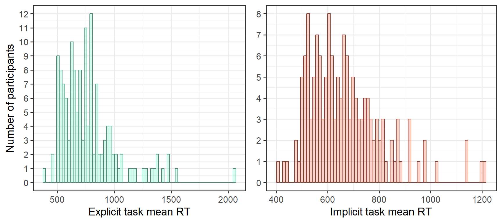
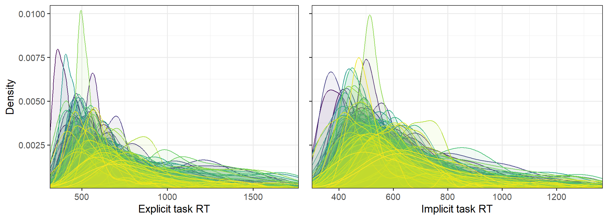
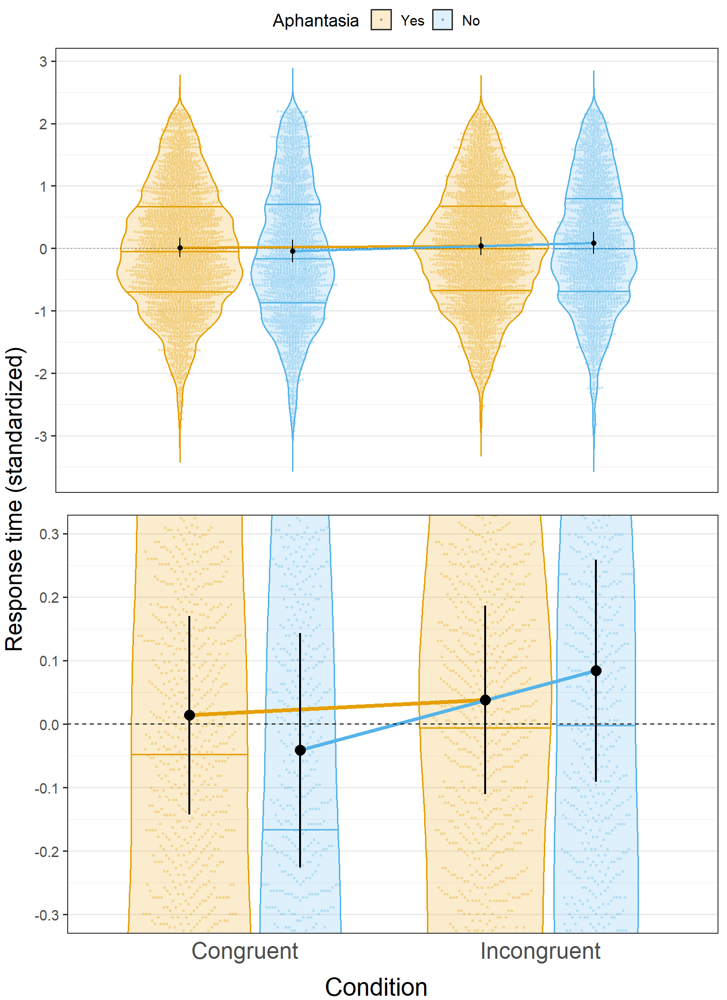
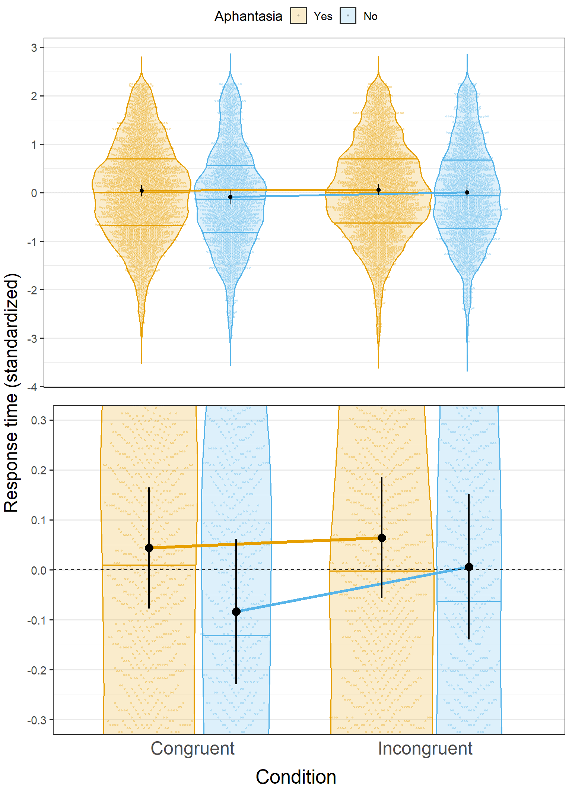
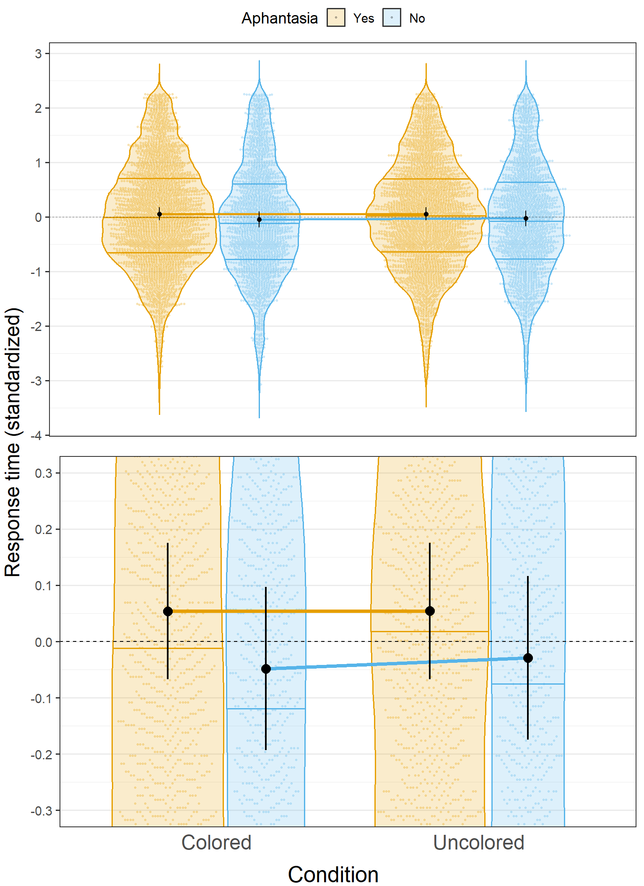
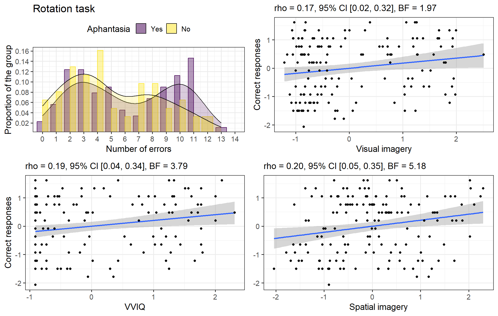

This analysis was conducted in R language through the RStudio Integrated Development Environment. Just down below is the setup code, including two essential steps: 1) installing the required packages for this data analysis, and 2) importing data into the dataframes used throughout. I left this (usually hidden) step there for reference in a view of transparency for the interested reader.
Code
# --- Packages -----------------------------------------------------------------# The package `librairian` will ease the package management with the "shelf" # function, which automatically: # 1) checks if a package is installed # 2) installs it if need be# 3) loads the package like the "library()" function would.if (!require(librarian)) install.packages(librarian)library(librarian)# now putting packages on our library's shelves:shelf( readxl, # Excel files management easystats, # collection of data analysis packages tidymodels, # collection of packages for a tidy modelling workflow bayesian, # bayesian modelling with brms and tidymodels multilevelmod, # multilevel modelling with lmer mclust, # mixture clustering ggpubr, # ggplot tools ggbeeswarm, # ggplot tools viridis, # ggplot colour-blind friendly palettes tidyverse # the essentials)# --- Global cosmetic theme ---theme_set(theme_bw(base_size =14))# --- Fixing a seed for reproducibility ---set.seed(14051998)# --- Importing data -----------------------------------------------------------# Association taskdf_asso <-read_excel("data/aphantasia_priming_tidy_data.xlsx", sheet ="data_asso")# Implicit taskdf_implicit <-read_excel("data/aphantasia_priming_tidy_data.xlsx", sheet ="data_implicit")# Explicit taskdf_explicit <-read_excel("data/aphantasia_priming_tidy_data.xlsx", sheet ="data_explicit")# Rotation taskdf_rotation <-read_excel("data/aphantasia_priming_tidy_data.xlsx", sheet ="data_rotation")# Questionnairesdf_questionnaires <-read_excel("data/aphantasia_priming_tidy_data.xlsx",sheet ="data_questionnaires" ) %>%# creating the a/phantasia groupsmutate(aphantasia =ifelse(vviq80 <32, "yes", "no"),aphantasia =fct_relevel(aphantasia, "yes", "no") )
Exploratory Data Analysis
Questionnaire data and imagery
Correlations
The four questionnaire variables - VVIQ, OSIQ-Object and Spatial, and SUIS - are meant to be used as predictors (independent variables) for the behavioural outcomes of the experiment (dependent variables, RTs and potentially accuracy). Three of these - VVIQ, OSIQ-Object and SUIS - evaluate visual imagery: as such, in a view of parsimony, we are going to evaluate the correlation between these continuous predictors and judge if they should be merged/omitted. The results of the Bayesian partial correlations between the four variables are displayed in Figure 1 and Table 1. Partial correlations have been chosen here to account for the (theoretically huge) covariance between visual imagery variables. It will result in more conservative estimations of the correlations, and a better understanding of the relations between visual and spatial imagery measures.
Figure 1: Correlation matrix of the questionnaire variables. The stars indicate the amount of evidence in favour of a correlation, as assessed by the \(BF_{10}\): No star = Anecdotal evidence, * = Weak evidence, ** = Moderate evidence, *** = Extreme evidence.
Table 1: Detailed correlation table of the questionnaire variables.
Variable 1
Variable 2
\(\rho\)
95% CI
Prior
\(BF_{10}\)
VVIQ
SUIS
0.47
[ 0.34, 0.58]
Beta (3 +- 3)
2.83e+07***
VVIQ
OSIQ-O
0.33
[ 0.18, 0.46]
Beta (3 +- 3)
1.32e+03***
VVIQ
OSIQ-S
0.17
[ 0.02, 0.32]
Beta (3 +- 3)
2.08
SUIS
OSIQ-O
0.58
[ 0.46, 0.67]
Beta (3 +- 3)
4.71e+12***
SUIS
OSIQ-S
0.22
[ 0.08, 0.37]
Beta (3 +- 3)
9.16*
OSIQ-O
OSIQ-S
-0.33
[-0.47, -0.19]
Beta (3 +- 3)
2.21e+03***
As we can see, while the three visual imagery variables are highly correlated, the association between these visual and spatial imagery (OSIQ-S) is inconsistent: VVIQ and OSIQ-S are positively correlated although with anecdotal evidence, SUIS and OSIQ-S have a moderately evidenced positive correlation, while OSIQ-Object and OSIQ-Spatial are negatively correlated. We’ll run a Principal Component Analysis to evaluate the possibility of a feature reduction of visual imagery as a single variable.
Figure 2: Loadings of each variable on the three components extracted by a PCA.
Table 2: Eigenvalues and variance explained by the three components extracted by a PCA.
Parameter
Component 1
Component 2
Component 3
Eigenvalues
2.84
0.97
0.113
Variance
0.71
0.24
0.028
Variance_Cumulative
0.71
0.95
0.981
Variance_Proportion
0.71
0.24
0.028
As expected, the visual imagery variables are grouped in a single component (“PC1” in Figure 2 or “Component 1” in Table 2) with an Eigenvalue of 2.84, therefore accounting for 71% of the total variance of the data. The second component (PC2 / Component 2) has an Eigenvalue of .97, accounts for 24% of the total variance, and is mostly loaded negatively on the OSIQ-S: this brings the total explained proportion of variance to 95%. Traditionally, the threshold used for selecting a principal component is an Eigenvalue of 1. Nevertheless, given the Eigenvalue of .97 and the properties of this component, i.e. singling out the specificity of the spatial scale, this component will be kept for analysis.
Standardized predicted values for each component will be computed and added to the data, renamed Visual Imagery (PC1, mostly VVIQ + SUIS + OSIQ-O with an influence of OSIQ-S) and Spatial Imagery (PC2, mostly OSIQ-S, with an influence of SUIS). In order to align the Spatial Imagery variable with the OSIQ-Spatial, the variable will be reversed (they are correlated negatively as it is, as shown by the -.96 loading on PC2).
Now we can see that the main visual imagery variables, namely the (conventional) VVIQ and the Visual Imagery component created through PCA are completely decorrelated from the Spatial Imagery component, as shown in Figure 3.

Figure 3: Correlation between the main visual imagery variables and the spatial imagery one.
The consequence of this analysis is that from this point onwards, for the future models to be fitted, two options are available:
Binning the participants in two categories based on the VVIQ (cut-off at 32, Aphantasics/Phantasics).
Using the visual imagery variable as a continuous predictor.
Although we could use the VVIQ both for categorizing and as a continuous variable, for the sake of consistency, we are going to use the VVIQ only as a classification variable for defining aphantasia, and the Visual Imagery component from the PCA as the continuous variable measuring visual imagery. Therefore two types of models are going to be fitted:
Models using Aphantasia as a categorical variable.
Models using Visual Imagery as a continuous variable.
In both cases, we are going to account for the potential effect of spatial imagery by using the eponymous component computed earlier as a predictor in the models.
Outcomes: accuracy and RTs?
Accuracy
While response time is an obvious outcome to model when it comes to decision tasks, the use of accuracy is more debatable, as the tasks were not specifically designed to be challenging. Traditionally, accuracy is mostly used to remove incorrect trials from RT modelling. We’ll describe accuracy data to evaluate its relevance in this analysis. The distribution of the percentages of errors across the three tasks is displayed in Figure 4.

Figure 4: Distribution of errors between groups in the three main tasks.
We can see that the distributions are skewed yet very similar across groups and tasks: as such, we are going to use accuracy only to remove missed trials in the analyses of the RTs. Nevertheless, the main noticeable aspect of these plots are the obvious outliers in each of the tasks. This information is crucial as it could reflect a wrong understanding of the task, or random responses: in any case, participants that have high error rates would require a deletion of up to 47% of their trials, which could become a bias in the modelling of the overall data. As there appear to be a cut-off of the main distribution around 16% of errors in all tasks, this value will be chosen as threshold. For each task separately, the results of participants with an error rate superior to 16% will be removed, prior to removing all the missed trials of the remaining participants for modelling RTs.
Response times
As a preprocessing, response times below 300ms and above 3000ms will be removed as they could represent false alarms, along with error trials. This amounts to 5.3% of trials in both tasks. As specified earlier, the data for each task from outliers that have an error rate above to 16% will be removed as well (9 participants in the explicit task and 4 in the implicit task). There could also be outliers with overall abnormally fast or slow RTs. This analysis will be conducted on mean RTs, the distribution of which is displayed in Figure 5, along with their statistics in Table 3.

Figure 5: Distribution of the mean RTs of participants in the explicit and implicit tasks.
Table 3: Descriptive statistics of the average RTs across the sample in both tasks.
Variable
n_Obs
Median
MAD
Min
Max
Skewness
Kurtosis
Explicit task mean RTs
8804
663.00
232.77
302.00
2994.00
2.09
5.41
Implicit task mean RTs
9017
578.00
161.60
301.00
2914.00
2.68
9.77
For this more precise analysis of mean RTs, we are going to use an outlier detection method based on the Median Absolute Deviation (MAD). Common thresholds used for outlier detection with MADs are \(median \ \pm \ 3 \cdot MAD\) (Hampel filter; see Enderlein, 1987). However, the low boundary of this interval would be aberrant in our case, as all the participants with fast RT means stay above the \(median \ - \ 1.5 \cdot MAD\). As for the high threshold, the choice the \(median \ + \ 3 \cdot MAD\) would set a highly conservative maximum (e.g. 1361ms for the explicit task) and bring the total number of removed trials over 13%. Therefore, after careful examination of the ranges, and in order to keep as many trials as possible, we chose to set the upper threshold at \(median \ + \ 5 \cdot MAD\) (i.e. 1797ms for the explicit task, and 1386ms for the implicit task), resulting in an overall deletion of 7.9% of trials in the explicit task and 8.9% of trials in the implicit one in this whole data preprocessing. The resulting distributions of RTs for each participant are represented in Figure 6.

Figure 6: Distribution of RTs in both tasks for each participant. Each colored line represents a single participant.
Inferential Analyses
Model description (Multilevel modelling)
Predictors and outcome
Our analyses aim to evaluate the predictive abilities of several variables on one outcome, the response times in the tasks. Our potential predictors are:
Group membership, with two levels: aphantasia/phantasia
Congruence conditions, with two levels: congruent and incongruent
Color conditions, with two levels: colored and uncolored.
Sub-levels of the responses (“random effects”) can also be accounted for:
the dependency between response times for each participant caused by repeated measures
the varying effects of Congruence for each participant
the varying effects of Color for each participant.
This structure will be modeled using Multilevel Models (also called hierarchical or mixed models), allowing us to add the sub-levels of the hierarchy within participant measures we described above in the model. RT data will be transformed using a Box-Cox transformation to bring the distributions closer to normality and improve the quality of the models.
For a subject \(i\) with a given Group/visual imagery, in the Congruence condition \(j\) and the Color condition \(k\), The maximal model of the resulting response time \(RT_{ijk}\) including all the predictors can be specified as such:
\[
\begin{aligned}
RT_{ijk} = \alpha + \alpha_{subject[i]} + \beta_{1} \cdot \ Group_{i} \times (\beta_{2} + \beta_{2_{subject[i]}}) \cdot Congruence_{j} \times (\beta_{3} + \beta_{3_{subject[i]}}) \cdot Color_{k}
\end{aligned}
\] Where \(\alpha\) is the global intercept, \(\alpha_{subject[i]}\) is a random intercept by subject accounting for the inherent randomness tied to participants, and \(\beta_{1/2/3}\) are the parameters representing the effect of each predictor. The “\(\times\)” signs represent the potential interactions along with fixed effects. Additionally, as one might expect the effect of the Congruence or Color conditions to have important variations between subjects (tied to cognitive processes and strategies), a slope \(\beta_{j/k_{subject[i]}}\) by subject can be added to the Congruence and Color parameters to account for this variance.
Potential models
RT data will be standardized before modelling, therefore the standardized coefficients reported will scale on standard deviations of the RT variable. This allows to interpret these parameters (regression coefficients) roughly with the same guidelines as usual indices, e.g., Cohen’s d. Several models will be fitted in turn: we are not going to fit reduced models excluding some main effects, as we would like to model all of them in any case to produce inferences (as opposed to raw predictions of future data). We’ll specify the following:
The minimal model, accounting only for the random effect of subjects, will serve as a comparison baseline:
All of these models have been fitted for both tasks and their predictive performances compared using the AIC, AICc (Akaike corrected Information Criterion) and BIC (Bayesian Information Criterion). The maximal model did not converge, so only the five first models were evaluated. The results of these analyses are displayed in Table 4.
(a) Explicit task models.
Name
AIC (weights)
AICc (weights)
BIC (weights)
mod_explicit_1
19691.7 (<.001)
19691.7 (<.001)
19712.9 (<.001)
mod_explicit_2
19607.4 (<.001)
19607.4 (<.001)
19649.7 (>.999)
mod_explicit_3
19601.8 (3.00e-03)
19601.9 (3.00e-03)
19672.3 (<.001)
mod_explicit_4
19591.7 (0.55)
19591.7 (0.55)
19676.3 (<.001)
mod_explicit_5
19592.1 (0.45)
19592.1 (0.45)
19676.7 (<.001)
(b) Implicit task models.
Name
AIC (weights)
AICc (weights)
BIC (weights)
mod_implicit_1
22052.6 (0.01)
22052.6 (0.01)
22073.8 (>.999)
mod_implicit_2
22047.1 (0.20)
22047.1 (0.21)
22089.5 (<.001)
mod_implicit_3
22045.5 (0.45)
22045.5 (0.45)
22116.2 (<.001)
mod_implicit_4
22046.9 (0.22)
22047.0 (0.22)
22131.7 (<.001)
mod_implicit_5
22048.1 (0.12)
22048.2 (0.12)
22132.9 (<.001)
Table 4: Performances of the fitted models for both tasks.
The fourth model including a slope by subject on Congruence is the most supported for the explicit task, while the third model including only an intercept by subject has the best performance for the implicit task. The parameters of these two models will be analysed in the following.
Explicit task
The parameters of the best model for the explicit task are displayed in Table 5. The significant parameters in the explicit task are the color and the interaction between the group and the congruence condition. The main effect of Color indicate that participants responded quicker in the colored condition, although this effect has no interaction with the other variables. The interaction between Group and Congruence reveals that non-aphantasics responded slower in the uncongruent condition. This effect is represented in Figure 7.
Table 5: Explicit task - Parameters of the optimal model including a random intercept and slope by subject on Congruence.
Parameter
Coefficient
SE
95% CI
t(8490)
p
(Intercept)
-0.03
0.08
(-0.19, 0.12)
-0.42
0.673
aphantasia (no)
-0.09
0.13
(-0.34, 0.16)
-0.72
0.469
congruence (uncongruent)
4.99e-03
0.03
(-0.06, 0.07)
0.15
0.879
color (uncoloured)
0.10
0.03
(0.04, 0.15)
3.25
0.001
aphantasia (no) × congruence (uncongruent)
0.12
0.05
(0.02, 0.22)
2.32
0.020
aphantasia (no) × color (uncoloured)
0.07
0.05
(-0.02, 0.16)
1.55
0.120
congruence (uncongruent) × color (uncoloured)
0.04
0.04
(-0.04, 0.12)
0.92
0.360
(aphantasia (no) × congruence (uncongruent)) × color (uncoloured)
-0.03
0.07
(-0.16, 0.09)
-0.52
0.604

Figure 7: Visualization of the Congruence and Group variables in the optimal model for the explicit task. The bottom plot is a ‘zoomed’ version of the first one on a shorter (standard) RT range for a clearer view of the model. The horizontal colored lines in the ‘violins’ represent quantiles at 25, 50 and 75%. The black dots indicate marginal means predicted by the model, whereas the black bars represent the credible intervals of these estimations.
Implicit task
The parameters of the best model for the implicit task are displayed in Table 6. The significant parameters are the Group, the interaction between Group and Congruence and the interaction between Group and Color. These parameters indicate that: 1) aphantasics responded slower, 2) the uncongruent condition had non-aphantasics becoming slower, and 3) non-aphantasics also responded slower in the uncolored condition. This main effect and the interactions are represented in Figure 8 for the \(Group \times Congruence\) interaction, and Figure 9 for the \(Group \times Color\) interaction.
Table 6: Implicit task - Parameters of the optimal model including a random intercept by subject.
Parameter
Coefficient
SE
95% CI
t(8654)
p
(Intercept)
0.06
0.06
(-0.06, 0.19)
0.98
0.325
aphantasia (no)
-0.21
0.10
(-0.40, -0.01)
-2.06
0.039
congruence (uncongruent)
-0.01
0.03
(-0.08, 0.05)
-0.41
0.681
color (uncoloured)
-0.03
0.03
(-0.10, 0.03)
-1.06
0.288
aphantasia (no) × congruence (uncongruent)
0.15
0.05
(0.05, 0.25)
2.93
0.003
aphantasia (no) × color (uncoloured)
0.11
0.05
(6.91e-03, 0.21)
2.09
0.036
congruence (uncongruent) × color (uncoloured)
0.08
0.05
(-0.02, 0.17)
1.63
0.103
(aphantasia (no) × congruence (uncongruent)) × color (uncoloured)
-0.15
0.07
(-0.30, -8.31e-03)
-2.07
0.038

Figure 8: Visualization of the Congruence and Group variables in the optimal model for the implicit task. The bottom plot is a ‘zoomed’ version of the first one on a shorter (standard) RT range for a clearer view of the model. The horizontal colored lines in the ‘violins’ represent quantiles at 25, 50 and 75%. The black dots indicate marginal means predicted by the model, whereas the black bars represent the credible intervals of these estimations.

Figure 9: Visualization of the Color and Group variables in the optimal model for the implicit task. The bottom plot is a ‘zoomed’ version of the first one on a shorter (standard) RT range for a clearer view of the model. The horizontal colored lines in the ‘violins’ represent quantiles at 25, 50 and 75%. The black dots indicate marginal means predicted by the model, whereas the black bars represent the credible intervals of these estimations.
Annexes
Rotation task
Some quick analyses of the rotation task are summarized as visualizations in Figure 10.

Figure 10: Analyses of the rotation task, including the distribution of errors between groups and correlations with the imagery variables.